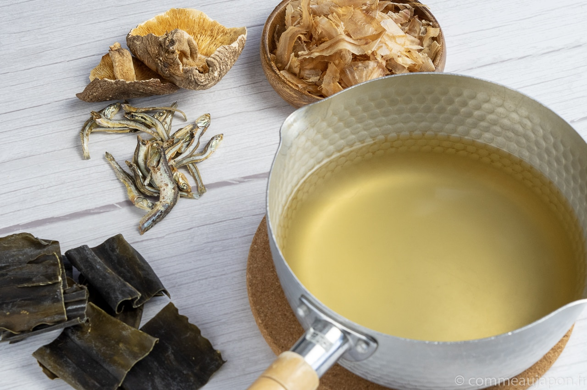

Dashi

Ingredients
- 8 cups water
- 20g kombu (dried kelp)
- 20g katsuobushi (dried bonito flakes)
Instructions
- In a large pot, combine 8 cups of water and 20g of kombu (dried kelp). Let it sit for about 30 minutes to allow the flavors to infuse.
- Slowly heat the pot over low heat, and just before the water starts to boil, remove the kombu.
Do not let the water boil with the kombu as it can result in a bitter taste.
- Add 20g of katsuobushi (dried bonito flakes) to the pot.
- Simmer for 1-2 minutes, then remove the pot from heat.
- Let the mixture steep for about 5 minutes to allow the bonito flakes to settle to the bottom of the pot.
- Strain the liquid through a fine-mesh sieve or cheesecloth to separate the bonito flakes.
The resulting liquid is your homemade dashi, which can be used as a base for various Japanese dishes, including ramen.
Specificity
Dashi is a light and clear Japanese stock known for its rich umami flavor.
It serves as a versatile base for various dishes, including ramen, providing depth without overpowering other ingredients.
Made from natural ingredients like kombu and bonito flakes, Dashi enhances the overall taste while allowing other flavors to shine.
back to home